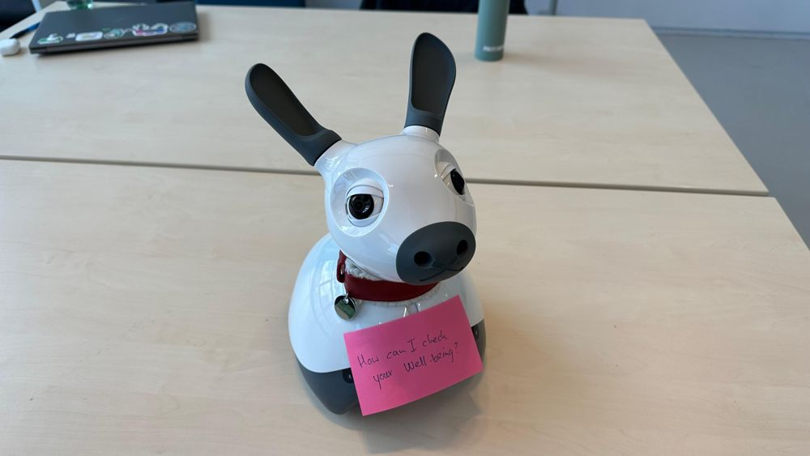
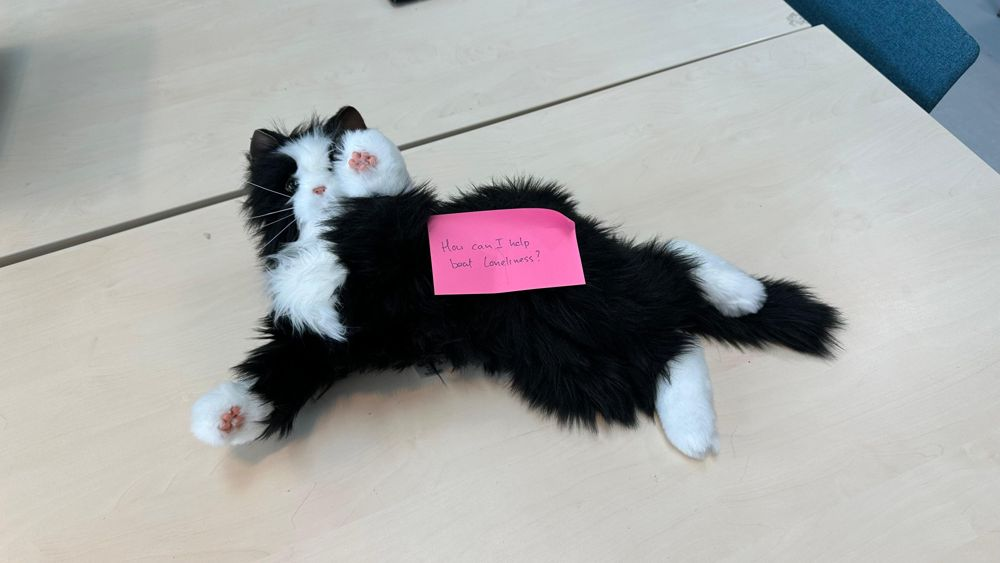
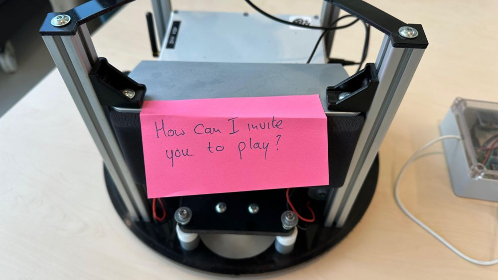
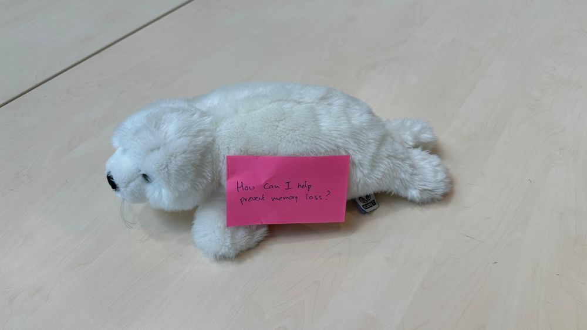
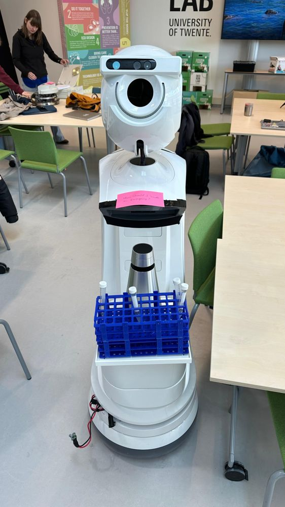
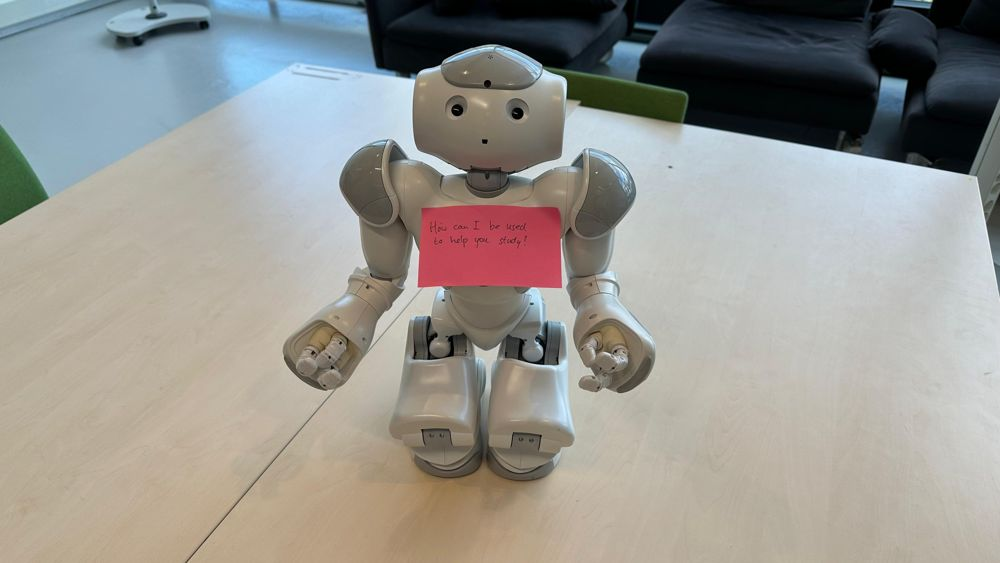
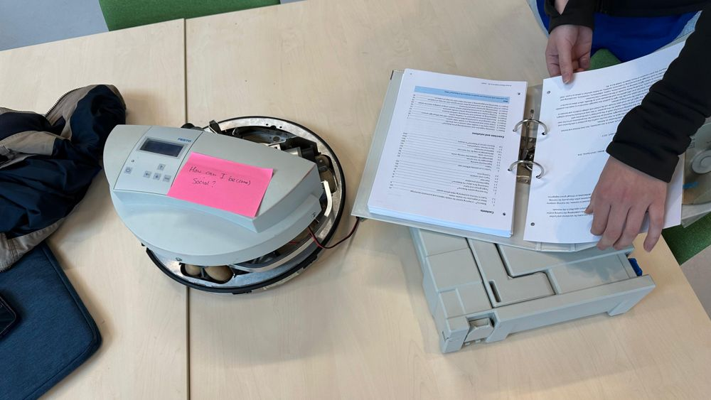
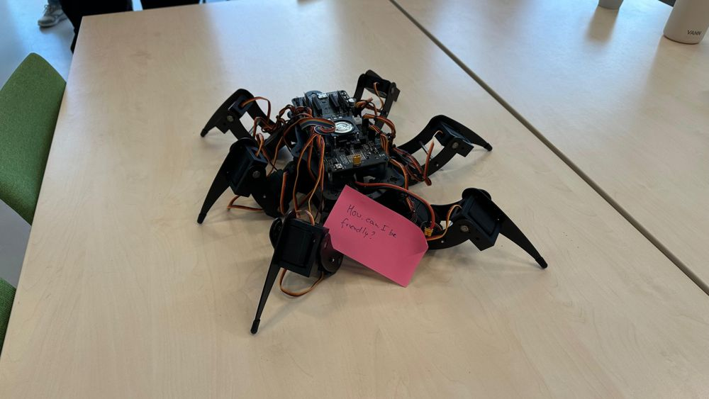
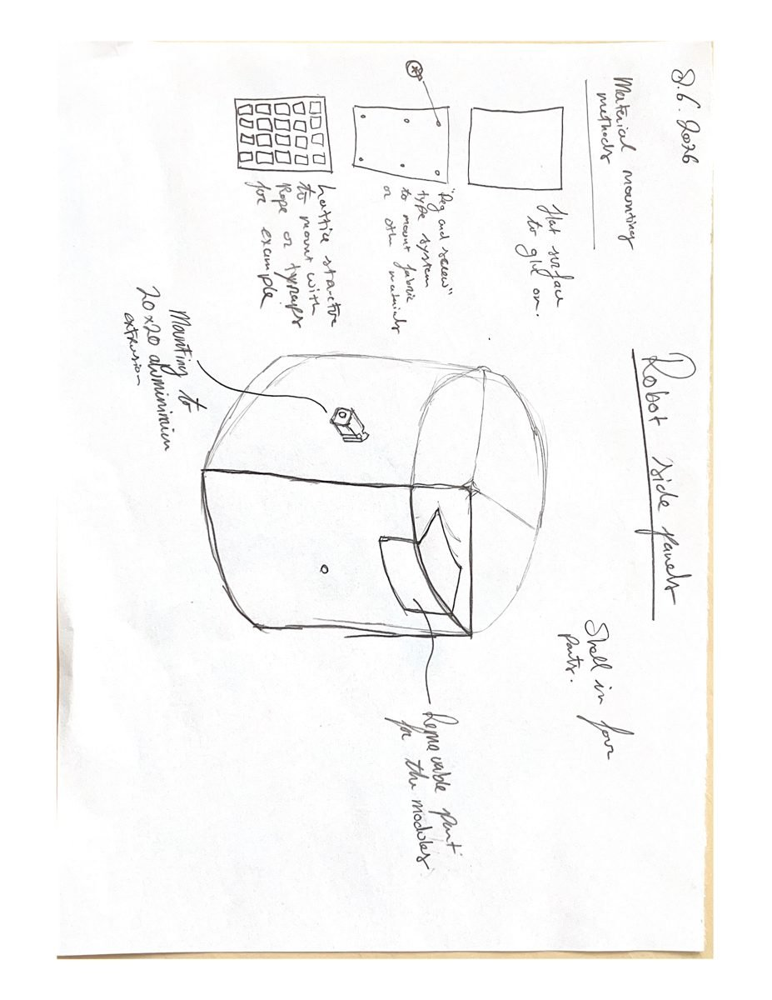
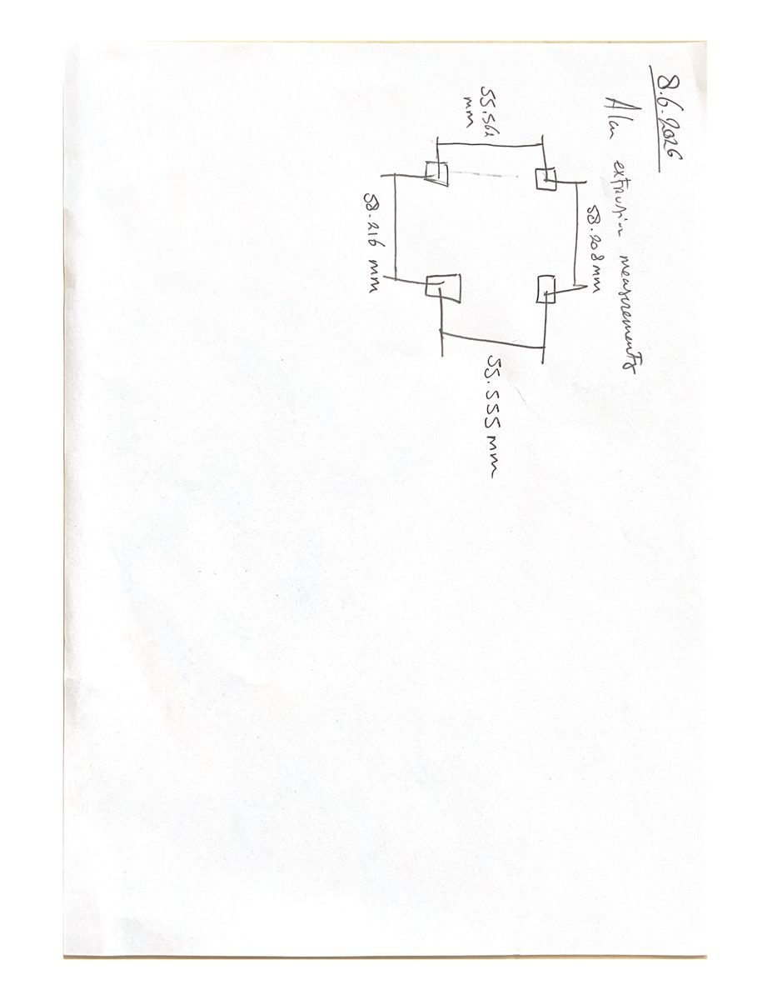

Assignment on morphology, comparison matrices, and embodiment tools.
Due: 18 May
Overall, humanoid robots like Pepper and NAO are still dominant in the field of social robotics. Even though SoftBank officially pulled the plug on the production of the Pepper robot in 2020 due to weak commercial demand, they are still widely used in ongoing research [1]. Their familiarity, capabilities such as multimodal expressiveness, and a huge backlog of comparative studies allow them to remain widely researched. However, since then, other robots have been included in social robotics research. Common examples are Romeo, Zenbo, Robios, Lynx, Misty II, and Buddy [2, 3, 4, 5].
Pet-like robots are also widely used, mainly in applications where therapy or companionship is important. The best-known examples are PARO and AIBO, which are useful when animal-like interactions are needed without using actual animals [3].
Overall, the shift away from Nao and Pepper is quite beneficial, transitioning from generic humanoid forms to more context-specific embodiments [6]. Designers would build hardware optimized for specific environments. As explained in the lecture, it is important to design according to affordances. This would hopefully lead to robots whose physicality naturally communicates their intended purpose, rather than relying on a screen or tablet to convey information.
Figure 1 shows the robots we were shown in the first session of the course, each carrying the design question it got there. The embodiment assignment builds on that collection. Some of them are compared in the matrix below, the others mostly show how wide the range of shapes already is. To map this section to the design stages: choosing the dimensions of the matrix was the conceptualisation, the filled-in matrix is the realisation, the three case studies below are the tool in action, and the Alan sketches at the end are the result.








Figure 1: The robots from the course, the embodiment options the matrix compares. From top left: Miro-e, a robotic cat, Alan, a seal plush, a care service robot, NAO, and more.
| Design Dimensions | NAO | Miro-e | Cat / Seal | iDo | Alan |
|---|---|---|---|---|---|
| Size | About 60cm, stands on the floor or desk. | Small, size of a small pet. | Small enough to sit on your lap. | Large and heavy, rolls on the floor. | Medium size, either on a desk or floor. |
| Shape & Materials | Humanoid shape, made of hard white plastic. | Looks like a dog or rabbit, smooth plastic. | Animal shape covered in soft fur. | Looks like a machine, metal base. | Made from aluminum parts and has a LED matrix for a head. |
| Technical Features | Programmed in Choregraphe, does gestures and speaks. | Uses ROS or Microcode, reacts to toys like a carrot. | Touch sensors, reacts when you pet it. | Drives around using ROS but has no social features. | Drives around, has a phone mount, controlled by a Wii Nunchuck. |
| Form vs Function | Human-like movements to teach and show things. | Acts like a pet to measure pain or make kids feel better. | Made for holding and cuddling. | Made to carry things, like bringing a cup of coffee. | Meant to be playful and ask people to interact with it. |
| Context / Use Case | Used for education, teaching kids or healthcare worker. | Hospital use, mostly for kids. | Used in Dutch healthcare, like for elderly or dementia patients. | Office or lab environments. | Office desk assistant. |
| Expectations | People expect a smart, walking robot helper. | People expect a cute, friendly robotic pet. | Expected to act like a calm cat or a stuffed animal. | Looks like a factory robot, so people dont expect it to talk. | Looks like a DIY project so expectations are low. |
The morphology matrix, filled in for five of the robots above (realisation).
What the matrix forces you to do is compare every robot on the same dimensions. The Expectations row is the important one: you cannot fill it in without thinking about what the shape promises the user, which is where humanoids usually lose. Form vs Function checks whether the body communicates what it can actually do, and Size plus Context roughly covers proxemics, how close the robot gets and whether that is appropriate. The VR sandbox idea below takes that last part further with Hall's zones [7] as a visible overlay.
The cases here are hypothetical, desk exercises with the real robots from the course. The tool needs two inputs, a case description and a set of robots to compare, and gives a fit judgement per robot as output. I used the first two to check whether the matrix actually discriminates between contexts, and then applied it to our own case.
This use case focuses on calming anxiety, managing withdrawal symptoms or providing emotional support in a Tactus addiction treatment centre.
This case is about a public or shared space (e.g. DesignLab) where a robot needs to grab attention and change student behaviour.
Finally I ran our own case through the same matrix. The inputs are simple: the case description on one side and the robots from Figure 1 on the other, and then filling in every row honestly.


Figures 2 and 3: Embodiment sketches for Alan from the group assignment (result). Left: the removable side panels, the part of the embodiment that stays changeable per dog. Right: measuring the aluminium extrusions of the frame to design the panel mounting.
What changed in the case description? Strictly speaking not that much, and I think that is worth being honest about. The functional breakdown in the case description already listed a hard, enclosed platform with swappable modules. What the matrix did is make the reason explicit: no fur and no humanoid shape, because of durability, hygiene and the expectations those shapes create. Before this exercise the plush companion was the unspoken default, after it the hard modular base was a motivated choice.
The tool I envision for other designers is a digital prototyping environment where designers create and evaluate robot morphologies in real-time using virtual reality. The core problem it tries to solve is the fact that building physical prototypes is time and money consuming, while simple sketches usually do not give the actual feeling the embodiment of the robot would give in a social situation.
The tool would have different sections of morphology selections; instead of building with the real hardware, designers have a library of 3D parts in VR, snapping these together with different sensors, joints, wheels and other morphological elements. The VR space also allows for an overlay of visualizing Hall’s proxemic zones [7], helping to understand in what ways a robot would appropriately respect different zones. Also, how the size changes of the robot could influence this, which could be easily done with a slider in VR. It is similar in a sense to bodystorming because the designers can physically walk around their 3D design to spot problems that drawings cannot. In 3D we can also easily test which affordances these different shapes and sizes communicate; if the shape does not communicate what it is supposed to do, we can change the shape before manufacturing anything.
Did the tool give a better result? For the two hypothetical cases it clearly discriminated, different robots won per case, which is what you want from a matrix. For our own case it mostly sharpened a direction we were already going, by making explicit why not a plush animal, which felt like the default before.
Is the tool itself good? It is cheap, fast, and forces you to fill in the uncomfortable rows. Its weak point is that it only compares robots that already exist, it cannot generate new shapes, while the design space of social robots keeps growing [2]. That is the gap the VR sandbox is meant to fill, but to be honest it stayed a concept, I never built or tested it. If I continued with it, step one would be testing whether walking around a virtual robot actually changes embodiment decisions.